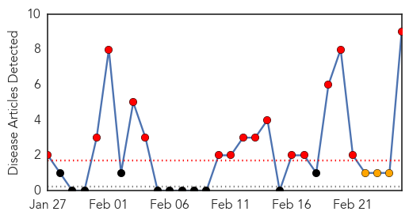
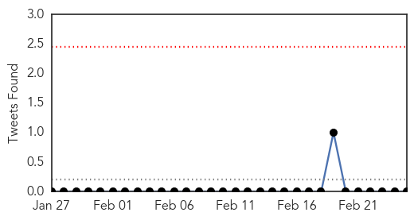
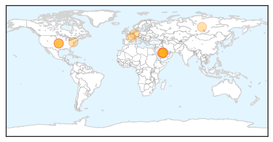

Meningitis
30-Day Web Trend
16 alerts, 3 warnings

30-Day Twitter Trend
0 alerts, 0 warnings

Article Locations

Article Confidences

Top Articles:
- 0.988
- 20 kids affected with polio-like illness cases
- 0.986
- Polio-Like Illness Found in Five California Children – New Day
- 0.982
- 'About 20' cases of polio-like illness found in California
- 0.956
- Probable meningococcal meningitis kills three in Nice, France
- 0.929
- Incidence of typhoid on the rise in twin cities
- 0.914
- Novartis' MenB vaccine, Bexsero to use for vaccination programme at University of California
- 0.712
- UCSB Begins Mass Meningitis B Vaccinations for Students, Staff
- 0.662
- ‘Parents of newborns should know all the symptoms of meningitis’
- 0.503
- Madisonville Student Diagnosed With Meningitis
Top Tweets:
-
No tweets found for Feb 25, 2014
MERS
30-Day Web Trend
2 alerts, 7 warnings

30-Day Twitter Trend
0 alerts, 0 warnings

Article Locations
Article Confidences

Top Articles:
- 1.000
- Saudi Arabia reports two new cases of MERS-CoV
- 0.997
- Deadly Mers virus has been infecting camels for years, Columbia University study shows
- 0.997
- Saudi Arabian Camels Carry MERS Virus
- 0.995
- Saudi camel virus found in humans, killer bug detected in secretions and blood
- 0.995
- Study: MERS-CoV may have been in Saudi camels 22 years ago
- 0.993
- Camel likely source of killer respiratory virus in people: study - Health, Science and Environment
- 0.993
- Camels Likely Source of MERS Virus in People — Naharnet
- 0.992
- Camels likely source of MERS virus in people: study
- 0.988
- Saudi camels infected with MERS or MERS-like virus as early as 1992: study
- 0.980
- MERS Virus That Threatens Humans Also Found in Camels
- 0.944
- MERS coronavirus in 74% of Saudi Arabian camels – The Chart
- 0.844
- DHA and France to collaborate in combating infectious diseases
Top Tweets:
- 0.606
- “@NIAIDNews: NIH study suggests camels have carried MERS-CoV since 1992 & virus may be jumping directly to people http://t.co/TX0Cl4uipv”